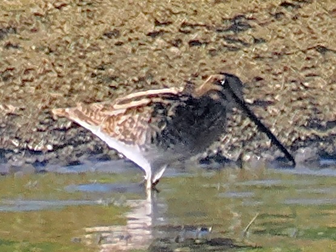
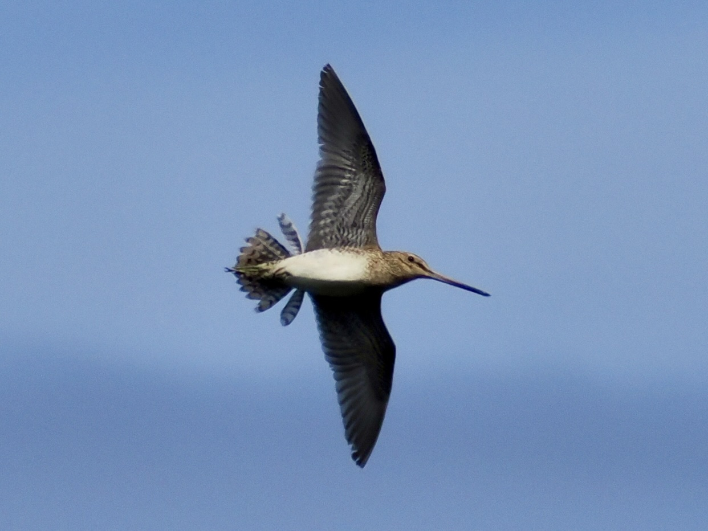

Common Snipe
Gallinago gallinago
Order: Charadriiformes
Family: Scolopacidae

A brown wader with a long straight bill and cryptic plumage. Probes the mud for food.

One might find a snipe circling the sky while making a bleating, almost mechanical call. This is a display flight known as winnowing.